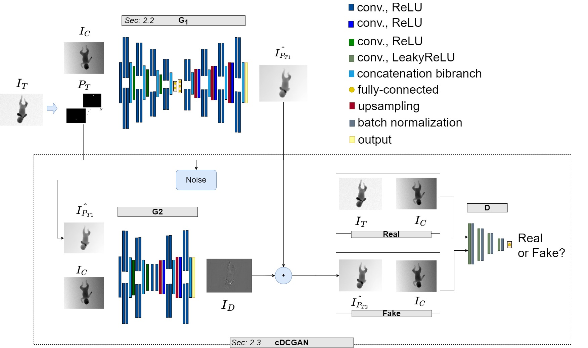

Giuseppe Pio Cannataa, Lucia Migliorellia, Adriano Mancinia, Emanuele Frontonib, Sara Mocciac
a Università Politecnica delle Marche, b Università degli Studi di Macerata, c Scuola Superiore Sant’Anna

The use of deep learning (DL) for preterm infant's movement monitoring has the potential to support clinicians in early recognizing motor and behavioural disorders. The development of DL algorithms is, however, hampered by the lack of publicly available annotated datasets. In this paper, we present a Generative Adversarial Network (GAN)-based framework to generate images of preterm infants' in a given pose to partially mitigate this issue. The framework consists of a bibranch encoder and a conditional GAN, to generate a rough image and a refined version of it, respectively. Evaluation was performed on the Moving INfants In RGB-D (MINI-RGBD) dataset, which consists of 12000 depth images acquired in top-view from 12 infants. A low Fréchet inception distance (142.9) and an inception score (2.8) close to that of real-image distribution (2.6) are obtained, showing the potentiality of the proposed framework in generating realistic images of preterm infants' in a given pose.